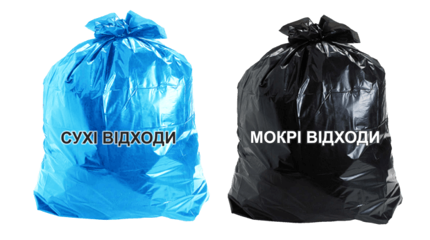

Кожного року для ліцеїстів 5-11 класів у рамках проєкту "Правильне сортування" проводяться трейнінги сортування сміття. Старшокласники вчать молодших школярів правильно сортувати відходи за відповідними правилами.
Проект "Квіти дарують життя"
Ліцеїсти УЛ№2 взяли активну участь у міському конкурсі "Чиста Умань". Відсортувавши 300кг різних відходів, на отримані кошти купили квіти та посадили їх на подвірї ліцею
Еко проєкт - "Вторинна серовина"
Для забезпечення чистоти у м.Умань ТОВ"Екоклінер" запровадило роздільне сортування сміття біля багатоповерхових будинків у приватних секторах "Міщанка", "Нова Умань". Компанія встановила баки для сміття призначенні для сотрування різних видів відходів.

Проєкт "Сучасні технології сортування."
У житловому комплексі "Греків ліс" почали використовувати сучасні новітні технологічні способи збору і сортування сміття. Це дало змогу правильно дотримуватися усіх санітарних норм, обмежити доступ до сміття різним тваринам. В майбутньому данна система дозволить сортування сміття на 8 груп різних видів відходів.